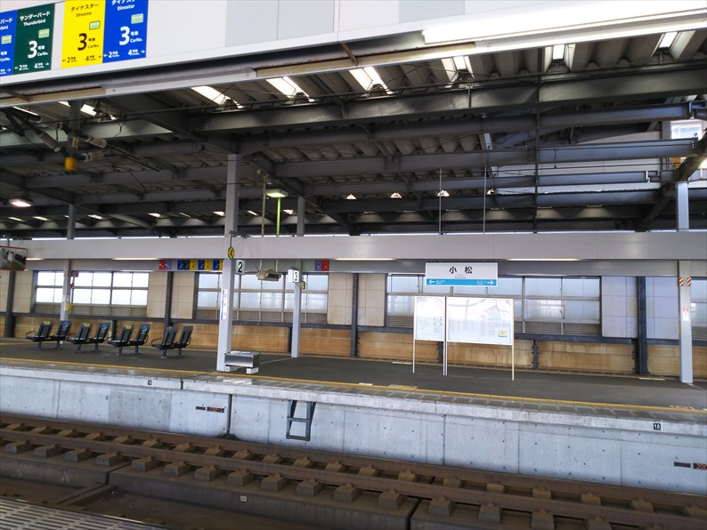
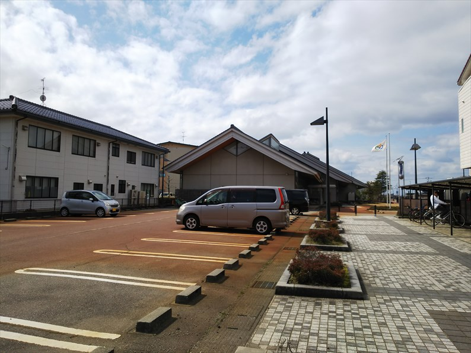
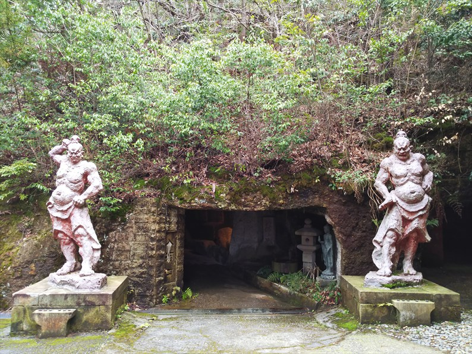
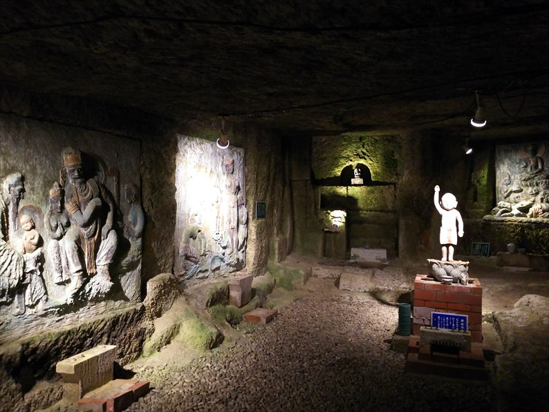

2024（R56） 3月7日 最後の北陸本線
さて、何度も往復した北陸本線も、実質的の最後の時を迎えております。最後に、北陸特急に乗って温泉巡りと行きます。
大阪駅。
金沢行の表示もあと残すところ１０日ほど。
といっても、大阪駅は大改装で、昔日の面影も無く
なってしまってますけど。
平日の朝なので、お名残乗車もほとんどなく、自由
席の列も短いもので。
いよいよ最後の「北陸特急」乗車です。
すでに新幹線開業後の乗換案内が入ってます。
あと１０日ともなると、金沢行ご愛顧ありがとうございましたアナウンス
もちゃんとありました。
今回は金沢まで乗りとおす時間がなく、小松で下車
です。

ＪＲの駅名票もあとわずか。
駅の工事もほぼ完成ですね。
最近は、どこの地方もデザインしゃれてますねぇ。
最初の温泉へバスで向かいます。
電車では何度も通ってる小松ですが、街中を通るの
は初めてで、古い町並みがけっこう残っているのが
意外でした。
住宅街の何の変哲もないバス停で下車。
１０分ほど歩いて行くと、集落があって、案内出てます。
お寺そのものっすね。
外は静かなのに、中はかなりにぎわっていました。
お湯はぬるめで露天風呂はお湯が冷たすぎて入れま
せんでした。でも泉質はＧＯＯＤです！
左の本堂のほうは、飲食できる空間になってて、う
どんをいただきました。

さて、次の温泉に向かいます。別のバス路線に乗る
ので、またしばらく歩きます。
雪をかぶった白山連峰を望みながら、のどかな景色
の中を歩きます。
時間に余裕があったので、一つ先のバス停まで歩い
ていきます。
廃線跡っぽい空間がありますね。

そうです。ここ、図書館なですが、実は北陸鉄道の
本寺井駅の跡地なんです。
昭和５５年まで走ってたとのこと。もうちょっと粘ってくれてたら・・・
で、次の目的地の辰口温泉へ行くために寺井中央のバス停に向って行きました。
しかし！寺井中央のバス停の時刻表見ても、辰口温泉行の時間が書かれてません！！
近くの道を探してみても、バス停はあっても別の行先ばっかり。時間も迫ってきて、バスを待ってるおばちゃんに聞いたり歩いて
来た高校生に聞いたりしたんですが、はっきりした答えは聞けず・・・
追い詰められて、一つ手前のバス停まで戻ろうとも思ったけどそこまで走る元気もなく・・・
そうこうしてると少し遅れてきたバスが見えてきて、「来たやん！」と思ったら、無情にも手前の交差点で右折して行きよった・・・
慌てて曲がったほうに走っていって、停まってるバスに手を振ったけど、無情にも出発していきよった。アクセル踏む前にちゃんとサイド
ミラー見てたら、絶対気づくはずやぞ〜！
ということで、バスを乗り過ごして辰口温泉に行くことは叶わず・・・
これまで、いろいろピンチなことはあったけど、ギリギリでかわしてきたのに、とうとうこんな目に・・・
もちろん、バス会社には電話で苦情入れました。
追い詰められてた証拠に、写真全然とれてません。
しかし冷静に振り返ると、完全に私のミスです。
事前にちゃんとバス停の場所まで調べてたら・・・
寺井から辰口温泉へ向かう方向を調べてたら、バス停を自力で見つけられたのに・・・
おばちゃんが自信なさそうに「小学校の前では？」という言葉を信じて小学校の方向に歩いて行ってれば・・・
高校生が「辰口温泉はコミュニティバスでは？」という言葉を信じてたら・・・（ほぼ同じ時間にコミュニティバスも辰口温泉行
が出てた）
結局、ヤキがまわってきた、ってことですね。
することもなく、次のバスまでも時間があるので、
ここから歩いて１５分ぐらいの博物館で北陸鉄道の
コーナーがあるというので、そこに行ってみました。
が、そこから小松に戻るバス停も見つからず、博物
館の人に聞いても確認しに行ったらウソで、結局博
物館には入らず（時間なく）コミュニティバスで傷
心のまま根上の駅に戻りました。
バス会社も、ここまで地元民に知られてないて、終
わっとるがな。もう地方のバスも、崩壊寸前なんや
ろか・・・
ちなみにここが国鉄の寺井駅だった駅で、さきほど
の廃線はここから出てました。
まぁ辰口温泉なんて、そないに有名でもないので、
まぁええかと思いつつ、北陸の駅から行ける有名温
泉をコンプリート出来ずに終わって残念です。
能美根上から小松に戻ります。
時間があるので喫茶店にでもと思っても、あるのは
新幹線開業に向けて出来たであろうこじゃれた、ど
こにでもあるようなカフェだけ。似合わんおっさん
一人で時間つぶしました。
で、温泉はもう終わりなんですが、最後にもう一か
所、せっかくなんで訪問します。
ハニベ前行きバスに乗り込みます。
そう。目的地は終点の「ハニベ」っす。
けっこう古くからある、この地域では有名な観光ス
ポットです。
その名も「ハニベ巌窟院」
大仏を迂回するように、山の斜面を登っていくと・
・・

この洞窟を入っていくんすね。
ん〜、なんともいえん世界が待ってました。

男性諸君、ご注意を。
さて、このハニベ前のひとつ手前のバス停まで歩い
て来ました。
ここは「鵜川遊泉寺」。ピンときました？
昭和６１年に廃止になった、北陸鉄道小松線の終着
駅です。
その昭和６１年の正月に、高２の私は降り立ってい
ます。
その時以来の訪問ですが、当時は雪に覆われてたこ
ともあり、その時の記憶と結びつくものはほとんど
ありません。
なんにもないとこやな、と思ったことは覚えてます。
逆に、何もないこともないがな、と今回思いました。
今は桜の名所みたいですね。
桜の木のある所は構内の端で、線路は歩道と、歩道寄
の車道の部分が駅だったと思います。


帰りのバスを待ってると、話好きのおばちゃんが出
てきて、かなり長い間、話をしてきました。
やることなかったので、ヒマつぶしにはよかったで
す。
多分、この駅名標の後ろの家に住んでる人です。ビ
−ルケースの前あたりが、バス停ですね。

さて、帰りは青春１８切符です。
大阪方面行の電車までは時間があるので、時間調整のために小舞子駅まで戻りました。
もうＪＲでなくなるこんな小駅、降りることもない
んでしょうね。
青春１８切符で乗る最後の北陸本線は敦賀行の普通
です。
敦賀駅で乗り換え。次に来るときは、新幹線駅の下
のホームかな。